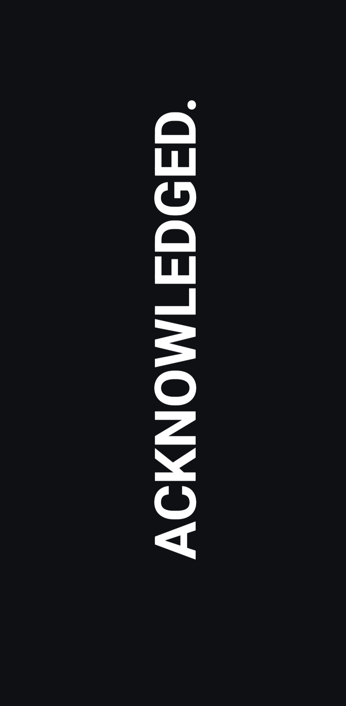

Augmented Communications Link - ACK
A Modern Approach to AAC, with a twist.
Compose statements, build out context-based replies, utilize variables to speed up construction of statements. Use tap based controls to start playback or use the companion Wear OS app to unlock gesture based initiation. Created primarily to assist myself with situational mutism concerns. This covers the many moments throughout my day where communicating with others via non-verbal means is significantly easier. This tool is a fair bit more advanced than what you'd normally call AAC. The depth of statement construction, the ability to bridge statements, establish replies around specific contexts. You should not assume this is meant for someone with heavily limited communication and cognitive ability.
Built by one person, primarily to work around situational mutism — the moments where speaking out loud is much harder than it should be. I am not a speech-language pathologist, a mental health professional, or anyone with formal training in AAC design. Created entirely by myself to help address this gap. Do not use as a substitute for appropriate care and support from a qualified professional.
How it works
Multimodal Output
Tap controls
Like any AAC app or device there are easy to access tap shortcuts that can be used to initiate playback. This interface is where you will compose your replies and statements, use variable construction to make rapid edits to more formal communication, and build response and reply profiles around various forms of context.
Gesture playback
The Wear OS companion handles gestures using a simple state machine — ARM → LOCK POSE → MODIFY → FIRE — giving you the ability to trigger a configured prompt using your wrist. this works with the phone locked and the screen off.
Full-screen output
Prompts play back full-screen with visual and audible output together, with audio routing to either the phone speaker or a connected Bluetooth speaker.

watch gesture cycle (ARM/LOCK/FIRE)
Decks
Organization with a focus on utility
A deck offers one specific form or Organization of communication profiles on screen at any time, to make working with the greater context system easier with continuous use. MATRIX decks support the use of profiles which gives decks additional flexibility. Configure a deck around work related activities, along with a few profiles for more detailed work related tasks
MATRIX Deck
This is the core ACK deck and experience. Build around rapid statement creation and recall. Tap to initiate playback, edit a prompt, use variables to speed up construction. Prompts can be bound to one of the three poses used by the Wear OS experience, with up to four commands issuable per pose. Additional context poses can be added inside a MATRIX deck, allowing for hot-swapping of all replies under a pose with a single tap.
Quick Actions Deck
A more slimmed down experience that offers the user the ability to bind up to four phrases to a pose under a single form of context. Used for greetings, closures, quick references. Edit all three poses then initiate playback using the watch or with a tap.
Emergency Deck
Your high priority communications deck. If you need help, if you have a response script for when things become extra difficult, if you don't want your prompt to disapear due to a stray tap or clench, this is where you access these prompts. Prompts issued from here can include a beaconing tone that plays before a prompt is issued, increasing the likelihood of reception by others.
Emoji Deck
Emotional context can be difficult to deliver sometimes. This deck covers this a bit. Pick from a suite of emoji from the built-in library or use any emoji you have access to on your device. Group them by category, add text to the displayed prompt, make the emoji prompt more sticky.
GIF Deck
Memes. A powerful communication medium online, now ready to use in real space. Store and organize GIFs that you'd like to play at any time here. Modifiers for GIF prompts enable better display of different aspect ratio content. Add in text to your GIF prompt to reduce load on the recipient.
Manual Override
A standard textbox input that can be used to store phrases and prompts to a category of your choosing. These can be played with a quick tap. You can also use this to issue an ephemeral reply, if the message isn't worth saving.
Target Computer
Eight "targets" for any prompt you issue using ACK. These can be configured to prepend or append any simple prompt issued via a MATRIX or Quick Actions deck. Add a quick name, place, identity, or callout with a quick tap before issuing a prompt to see it added to your statement.
Your voice at a tap or twist
Composable statements, tuned to context that matters to you.
ACK is build around rapid statement construction. Fire off a one-off reply, build a social deck around a specific outing, grant yourself some peace of mind with access to emergency statements when verbalizing isn't possible.
Audio Architect
Adjust audio playback with texture, adjust the speed, cadence, and tone to better fit a voice that you want to hear, rather than the usual flat output and delivery. Pick from a variety of TTS voices installed on your device then modify the output.
Location awareness
Geo-Protocol: Offline location-aware deck management
Geo-Protocol handles automatic switching of decks and profiles based on user defined geofenced zones. Offline when using the SOVEREIGN engine, uses Google Play Services with the OPTIMIZED engine. Open the map to drop a pin, then configure the name, radius, and enter/exit logic. Enable automatic swapping to a specific deck when crossing into one of these zones, handle how exiting the zone is configured.
This runs entirely on-device when using the SOVEREIGN engine, which comes with a few tradeoffs in accuracy. If accuracy and speed are a concern users have the option to enable an online-assested mode via OPTIMIZED. Your location data will be shared with Google in order to handle positioning with greater accuracy.
Training & confidence-building
Practice the gestures before you need them.
Training Ground
Free-form gesture practice with live telemetry and normal pacing — nothing you do here actually plays back or sends output. A safe space to get the arm/lock/modify/fire cycle into muscle memory.
Deck Trainer
Scored practice against your own real Matrix or Quick Actions deck, so you're rehearsing the actual layout you'll use — not a generic demo.
The companion
A Wear OS app that does the physical half.
The watch side is deliberately small: it's what senses the pose, watches for a wake gesture (by default, a triple wrist twist so commands can't fire by accident), and pushes that event to the phone. The phone stays in charge of decks, profiles, and playback. A background sensor service on the watch keeps this working without needing the watch screen to stay open the entire time you're wearing it.
watch pairing / pose selector
Help, onboarding & transparency
A tutorial system that only advances when you actually do the thing.
ACK's in-app help isn't a slideshow. Each module only steps forward when a real event fires from the real UI — a specific tap, a committed text field, a cleared overlay, an actual watch gesture broadcast — so finishing a walkthrough means you've genuinely done it once, not just read about it.
Data Port
Backup and restore live under Settings. Your decks, profiles, and variables are yours — the Data Port exists so you can move them, keep copies, and never be locked into a single install.
Under the hood
For anyone who wants to build it themselves.
ACK is Kotlin + Jetpack Compose, split into a phone module and a Wear OS module. Maps are rendered fully offline with Mapsforge/vtm — no tile server, no network dependency, matching the rest of the app's local-first design.
Build requirements
- Android Studio
- A custom Mapsforge-compatible map splice for your local region,
dropped into
app/src/main/assets
Full contribution workflow — branch naming, commit conventions, and the day-to-day git flow — is documented in docs/GIT_WORKFLOW.md.
| Component | License |
|---|---|
| Mapsforge / vtm (offline maps) | LGPLv3, with a static-linking waiver |
| AndroidX / Jetpack Compose | Apache-2.0 |
| ACK itself | GPLv3 |
Status & disclaimers
Where this actually stands.
This section gets updated by hand against
docs/HELP_TUTORIAL_GUIDE.md — it's a snapshot, not a live
feed, so treat it as "true as of the last update," not real-time.
Known gaps
- Several help/tutorial modules are written but not yet wired to live UI tags (Deck Management, and Manual Override rewrites).
Not a substitute for professional AAC evaluation or speech-language therapy. Built by one person as a personal tool, shared as-is.